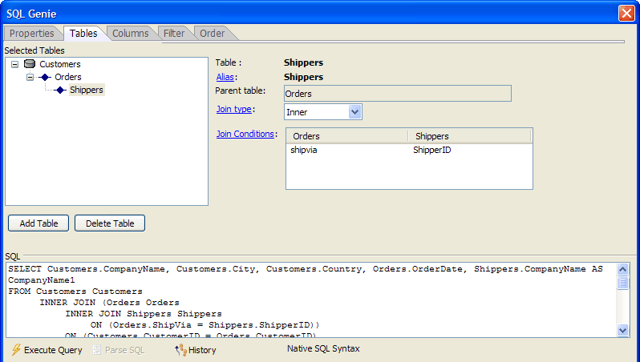
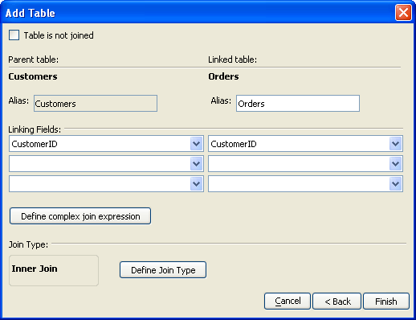

SQL Genie Tables Tab
The Tables tab of the SQL Genie defines the tables that will provide the data for your report.

Any time that the  Execute Query
button is enabled, you may click it to see a sample of the records that
the query will return. At any time you may click the
Execute Query
button is enabled, you may click it to see a sample of the records that
the query will return. At any time you may click the  History button to see a list of SQL statements previously
created in this session in the <span class=Screen>SQL History Dialog</span>.
History button to see a list of SQL statements previously
created in this session in the <span class=Screen>SQL History Dialog</span>.
Click Add Table to display the Add Table dialog.
Optionally, to include more items in the list, select any of the check boxes at the bottom of the dialog.
Select a table from the list and click OK.
The default assumption is that an additional table will connect to a previously selected table with a common linking field.
Click Add Table to display the Add Table dialog.
Optionally, to include more items in the list, select any of the check boxes at the bottom of the dialog.
Select a table from the list and click Next >.
Select the field(s) that link the two tables from the Linking Fields lists. For example, the following picture shows the relationship between the Customers and the Orders tables of the Northwinds database.

By default an additional table is assumed to be linked to its parent by an INNER JOIN. If you want to change this:
Optionally, select the Table is not joined check box.
Optionally, click Define Join Type to display the Join Type dialog.
Make a selection and click OK. The options are:
|
Option |
Description |
|
Inner Join |
Default selection. An INNER JOIN only includes records where the joined fields from both tables are equal. |
|
Left Outer Join |
A LEFT OUTER JOIN includes all records from the parent table and only those records from the child table where the joined fields are equal. |
|
Right Outer Join |
A RIGHT OUTER JOIN includes all records from the child table and only those records from the parent table where the joined fields are equal. |
|
Full Outer Join |
A FULL OUTER JOIN includes all records from parent and child tables. |
Click Finish to return to the SQL Genie.
To delete a table:
Select the table in the Selected Tables list.
Click Delete Table.
After you have defined a JOIN relationship between 2 tables, you may modify the relationship of the child table to its parent table.
Select the child table in the Selected Tables list.
Optionally, select a different parent table from the Parent table list.
Optionally, click Join type to display the Join Type dialog and select a different method of linking the tables.
Optionally, click Join Conditions to display the Edit Join Expression dialog:
In this dialog you may select different linking fields.
Optionally, click Define complex join expression to directly edit the SQL linking expression.
Click OK to continue.
When using the Edit Join Expression dialog, you may use the genie to retrieve and insert field names, functions, or operators.
|
Option |
Description |
|
Insert the name of a parent table field |
Select Insert > Parent table fields > Field_Name. |
|
Insert the name of a linked table field |
Select Insert > Linked table fields > Field_Name. |
|
Insert a Portable SQL function |
Select Insert > Functions > Function_Name. |
|
Insert an operator |
Select Insert > Operators > Operator. |
See Also